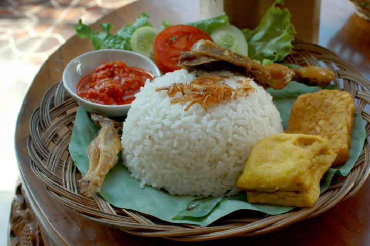

Makanan enak cocok untuk sarapan!
Nasi uduk dibuat dengan cara mengolah beras putih, namun diaron dan
dikukus memakai santan. Dibumbui sehingga rasa nasinya begitu khas dan
nikmat. Disajkan dengan aneka ikan, masakan ini sering dijual di pinggir
jalan sebagai menu sarapan.
Bahan bahan
- 300 g beras
- 450 ml santan kelapa kental
- 2 lembar daun salam muda
- 2 butir cengkeh
- 2 batang serai dimemarkan
- 2 cm kayu manis
- 1 sdt merica
- 1 sdt garam
Cara membuat
- Cuci beras sampai bersih lalu sisihkan dulu.
- Rebuslah santan lalu masukkan daun salam dan serai
-
Jangan lupa juga untuk memasukkan cengkeh, kayu manis serta merica dan
garam.
- Aduk sampai mendidih lalu masukkan santan dan beras.
-
Kukuslah sampai beras matang hingga menjadi nasi dan siap disajikan.
Kembali ke atas
Kembali ke halaman utama